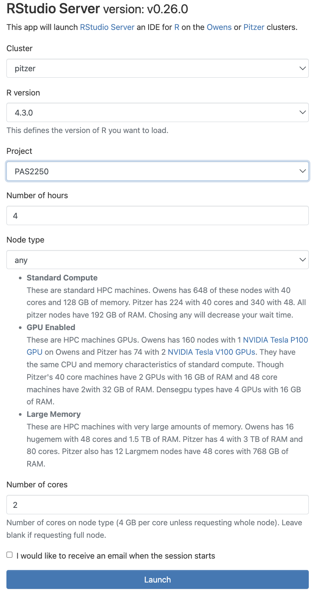
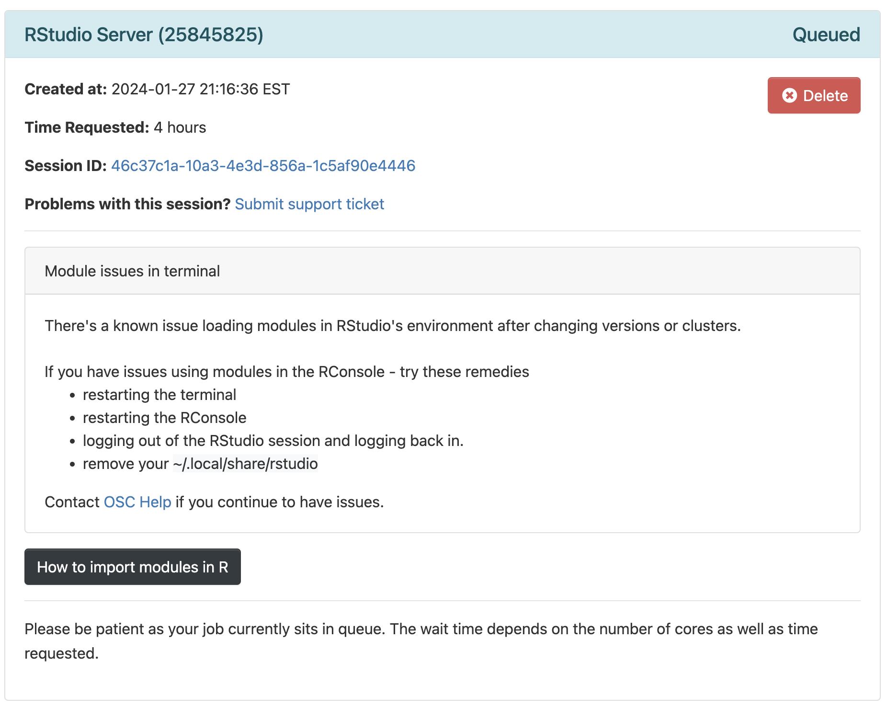
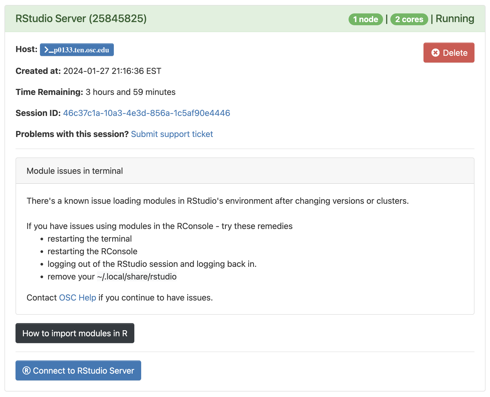
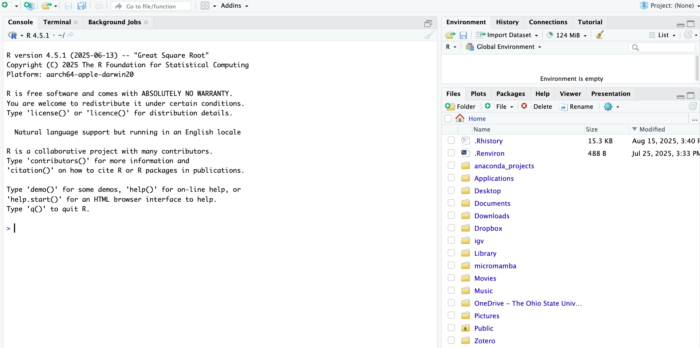
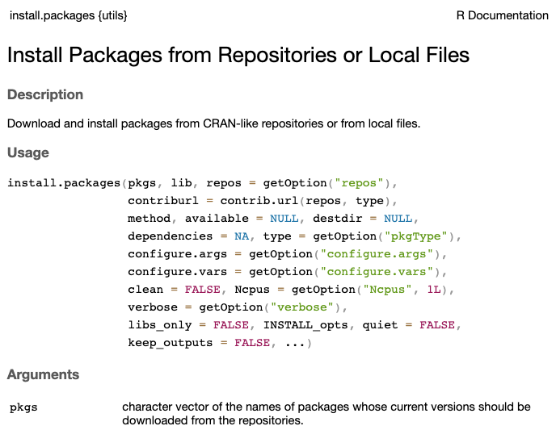
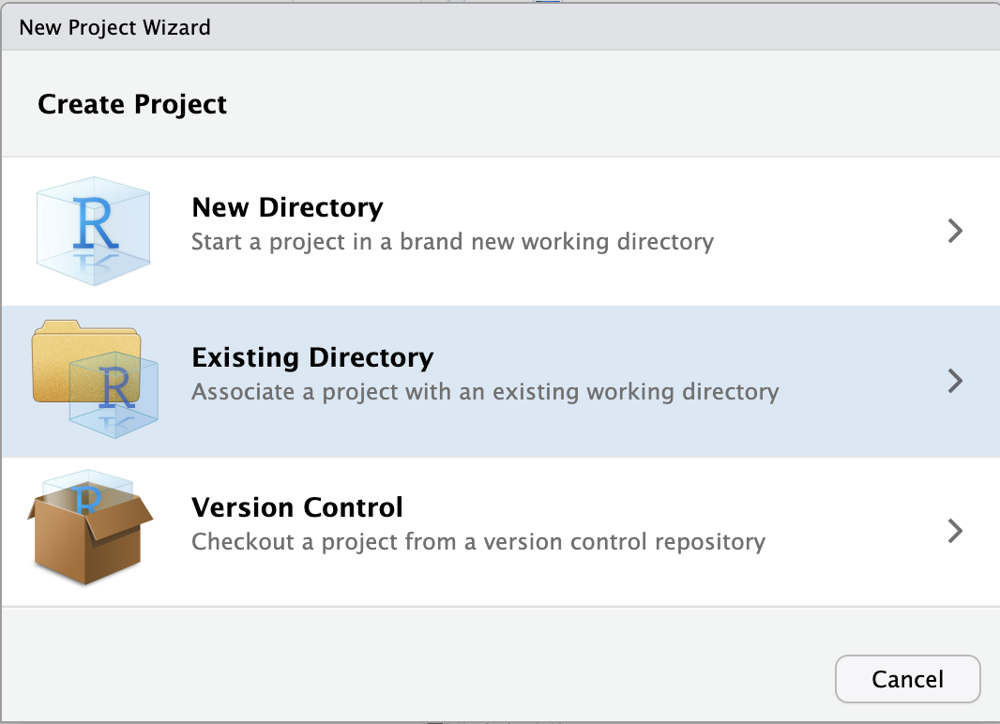
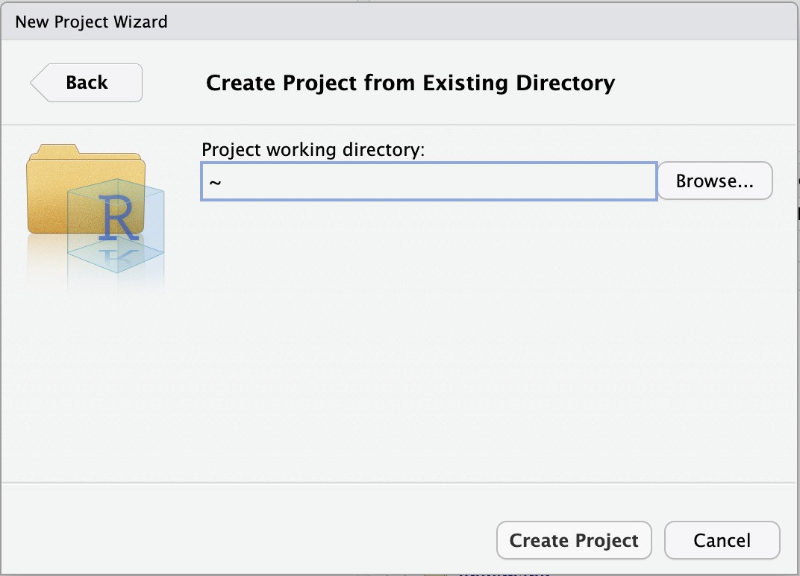
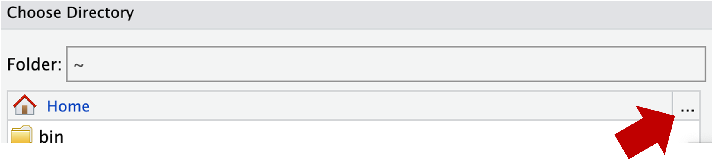
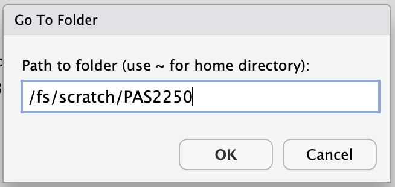

![]()
5 + 5[1] 10Week 11 – lecture A
This week is the first of a series of four that will focus on the R language.
Besides being a great all-round tool for data analysis and visualization, the R language is probably the best environment for the “downstream” analysis of omics data, with an excellent array of packages for e.g.:
[TBA - Rationale for using R including in omics data context]
Specifically, you will learn:
In this lecture, you will learn:
R can be run using a console that itself can simply be run in the terminal. However, we will be running R inside a fancy editor (or “IDE”, Integrated Development Environment) called RStudio, which makes working with R much more pleasant!
From within your browser, you can access a version of RStudio (“RStudio Server”) that will be running on OSC’s computers.
Click on Interactive Apps (top bar) and then RStudio Server (all the way at the bottom)
Fill out the form as follows:
pitzer4.4.0PAS28802any1TBA - Update screenshot

Click the big blue Launch button at the bottom
Now, you should be sent to a new page with a box at the top for your RStudio Server “job”, which should initially be “Queued” (waiting to start).


Connect to RStudio Server at the bottom of the box, and an RStudio Server instance will open in a new browser tab. You’re ready to go!When you first open RStudio, you will be greeted by three panels:
Left: the default tab in this panel is your R “Console”, where you can type and execute R code (if you’ve previously used standalone R without RStudio, all that would be shown is this type of console).
Top right: the default tab in this panel this is your “Environment”, which shows you all the objects that are active in your R environment.
Bottom right: the default tab in this panel is “Files”, showing the files in your working directory (more about that next). There are also additional tabs to e.g. show plots, packages, and help, some of which we’ll see later today.
[TBA - Use screenshot from OSC, and annotate in Powerpoint]

To get used to typing and executing R code, we’ll simply use R as a calculator – type 5 + 5 in the console and press Enter:
5 + 5[1] 10R will print the result of the calculation, 10. The result is prefaced by [1], which is simply an index/count of outputs, because sometimes R can output hundreds of numbers or other elements.
Some additional examples:
# Multiplication
6 * 8[1] 48# Division
40 / 5[1] 8# Exponents
3 ^ 4[1] 81# Parentheses change order of operations
(5 + 3) * 2[1] 16# Without parentheses, multiplication happens first
5 + 3 * 2[1] 11When using R as a calculator, the order of operations is the same as you would have learned back in school. From highest to lowest precedence:
(, )^ or ***/+-The > sign in your console is the R prompt, which indicates that R is ready for you to type something. In other words, this is equivalent to the $ Bash prompt that you’re used to.
Also just like in the Unix shell, when you are not seeing the > prompt, R is either busy (because you asked it to do a longer-running computation) or waiting for you to complete an incomplete command.
If you notice that your prompt turned into a +, you typed an incomplete command – for example:
10 /+Once again like in the Unix shell, you can either try to finish the command or abort it by pressing Ctrl+C (Esc also works in R) – let’s practice the latter here.
Comments in R are just like in the Unix shell: you can use # signs to comment your code, both inline and on separate lines:
# This line is entirely ignored by R
10 / 5 # This line contains code but everythig after the '#' is ignored[1] 2In R, you can use comparison operators to compare numbers. When you do this, R will return a logical (one of R’s “data types” – more about these later): either FALSE or TRUE. For example:
# Greater than
8 > 3[1] TRUE# Less than
2 < 1[1] FALSE# Equal to
7 == 7[1] TRUE# Not equal to
10 != 5[1] TRUE# Greater than or equal to
6 >= 6[1] TRUEHere are the most common comparison operators in R:
| Operator | Description | Example |
|---|---|---|
> |
Greater than | 5 > 6 returns FALSE |
< |
Less than | 5 < 6 returns TRUE |
== |
Equals to | 10 == 10 returns TRUE |
!= |
Not equal to | 10 != 10 returns FALSE |
>= |
Greater than or equal to | 5 >= 6 returns FALSE |
<= |
Less than or equal to | 6 <= 6 returns TRUE |
To do almost anything in R, you will use “functions”, which are the equivalent of Unix commands.
TBA - A couple of equivalent shell <-> R functions, e.g:
print("Hello world")[1] "Hello world"getwd()head(x)You can recognize function calls by the parentheses. Inside those parentheses, you can provide arguments to a function.
TBA - compare with arguments and options in the shell
Another important function is c(), which stands for combine or concatenate. With c(), you can create vectors that contain multiple elements, like multiple numbers. You’ll learn more about vectors in the next session, but here is a quick example:
c(10, 15)[1] 10 15Below are examples of some other R functions:
| Function | Description |
|---|---|
abs(x) |
Absolute value |
sqrt(x) |
Square root |
log(x) |
Natural logarithm |
log10(x) |
Common logarithm |
round(x, digits = n) |
E.g round(3.475, digits = 2) returns 3.48 |
help() and ?The help() function and ? help operator in R offer access to documentation pages for R functions, data sets, and other objects. They provide access to both packages in the standard R distribution and contributed packages.
For example:
?install.packagesThe output should be shown in the Viewer tab of the bottom left RStudio panel, and look something like this:

We can assign one or more values to a so-called “object” with the assignment operator <-. A few examples:
# Assign the value 250 the object 'length_cm'
length_cm <- 250
# Assign the value 2.54 to the object 'conversion'
conversion <- 2.54In the shell, we’ve been calling these variables, and that terminology is also used for R objects like the above ones. However, R objects can take on many forms (we’ll talk about data structures in a bit), including more complicated things like tables. That’s why the general term object is used here.
To see the contents of an object, you can use the print() function as the equivaluent of echo in the Unix shell:
print(length_cm)[1] 250However, in R you can simply type an object’s name:
length_cm[1] 250Importantly, you can use objects as if you had typed their values directly:
length_cm / conversion[1] 98.4252length_in <- length_cm / conversion
length_in[1] 98.4252Some pointers on object names:
Because R is case sensitive, length_inch is different from Length_Inch!
An object name cannot contain spaces — so for readability, you should separate words using:
length_inch (this is called “snake case”)wingspan.inchwingspanInch or WingspanInch (“camel case”)You will make things easier for yourself by naming objects in a consistent way, for instance by always sticking to your favorite case style like “snake case.”
Object names can contain but cannot start with a number: x2 is valid but 2x is not.
Make object names descriptive yet not too long — this is not always easy!
For example, install.packages() is an important function you already used if you followed the setup instructions for this workshop: it will install an R package. R packages are basically add-ons or extensions to the functionality of the R language. Inside the parenthese of install.packages(), you should provide a package name as an argument, like install.packages("tidyverse").
Another example of an R function is library(), which will access your “library” of installed packages to load a package. Every time you want to use a package in R, you need to load it, just like everytime you want to use MS Word on your computer, you need to open it.
TBA - Start with a simpler installation - then tidyverse
install.packages("tidyverse")# (Output like that shown below is expected if the package can be loaded:)
library(tidyverse)── Attaching core tidyverse packages ──────────────────────── tidyverse 2.0.0 ──
✔ dplyr 1.1.4 ✔ readr 2.1.5
✔ forcats 1.0.0 ✔ stringr 1.5.1
✔ ggplot2 3.5.2 ✔ tibble 3.3.0
✔ lubridate 1.9.4 ✔ tidyr 1.3.1
✔ purrr 1.1.0
── Conflicts ────────────────────────────────────────── tidyverse_conflicts() ──
✖ dplyr::filter() masks stats::filter()
✖ dplyr::lag() masks stats::lag()
ℹ Use the conflicted package (<http://conflicted.r-lib.org/>) to force all conflicts to become errorsWe can figure out where our working directory with getwd():
getwd()[1] "TBA"You can change your working directory with the function setwd():
setwd("TBA")However, there is a better way of dealing with working directories, which is to avoid using setwd() altogether and to use RStudio Projects instead.
[TBA - Explain Projects and create a Project]
Using an “RStudio Project” will most of all help to make sure your working directory in R is correct. To create a new RStudio Project inside your personal dir in TBA:
File (top bar, below your browser’s address bar) > New ProjectExisting Directory.
Browse... to select your personal dir.
~), from which you can’t click your way to /fs/scratch! Instead, you’ll first have to click on the (very small!) ... highlighted in the screenshot below:
/fs/scratch/PAS2658, e.g. as shown below, and click OK:
Lab9 dir.Choose to pick your selected directory.Create Project.Once you open a file, a new RStudio panel will appear in the top-left, where you can view and edit text files, most commonly R scripts (.R). An R script is a text file that contains R code.
Create and open a new R script by clicking File (top menu bar) > New File > R Script.
It’s a good idea to write and save most of our code in scripts, instead of directly in the R console. This helps us keep track of what we’ve been doing, especially in the longer run, and to re-run our code after modifying input data or one of the lines of code.
To send code from the editor to the console, where it will be executed by R, press Ctrl + Enter (or, on a Mac: Cmd + Enter) with the cursor anywhere in a line of code in the script.
Practice that after typing the following command in the script:
5 + 5[1] 10